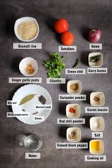
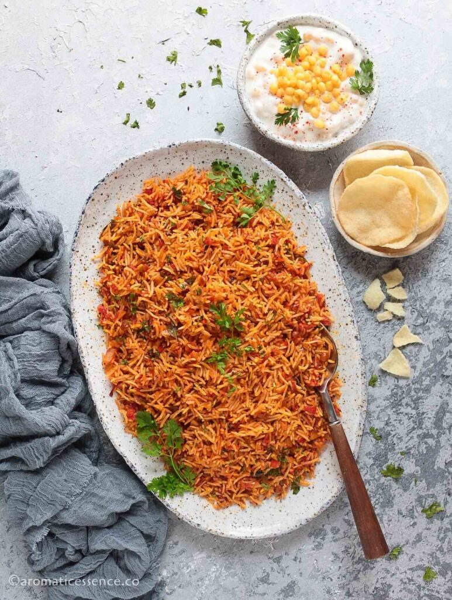

STEPS TO PREPARE TOMATO RICE
- Ingredients Preparation
- 1 cup Basmati or regular rice
- 2 large ripe tomatoes (finely chopped)
- 1 medium onion (sliced)
- 1 tsp mustard seeds
- 1/2 tsp cumin seeds
- 2 green chilies (slit)
- 1/2 tsp turmeric powder
- 1 tsp red chili powder
- Salt to taste
- Fresh coriander leaves (chopped)
- Oil for cooking
- Optional: ginger-garlic paste, curry leaves
- Cook rice separately and allow it to cool

- COOKING TOMATO RICE
- Heat Oil in a Pan:
- Add mustard seeds and let them splutter.
- Add cumin seeds, green chilies, and curry leaves.
- Optionally, add ginger-garlic paste and sauté until raw smell goes.
- Cook the Onion and Tomatoes:
- Add sliced onions and sauté till golden.
- Add chopped tomatoes, turmeric, chili powder, and salt.
- Cook until the tomatoes turn soft and oil starts to separate.
- Mix with Rice:
- Add the cooled rice to the tomato mixture.
- Mix gently to avoid breaking the rice.
- Adjust salt and spices as needed.
- Garnish and Serve:
- Garnish with chopped coriander leaves.
- Serve hot with curd, pickle, or papad.

YUMMY..! DISH IS READY
LET'S ENJOY...